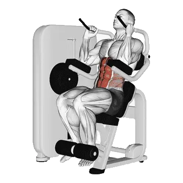

Machine Seated Crunch
Machine Seated Crunch shows average weight and strength standards as a reference for core. Primary muscles: Rectus abdominis.

Average weight: Intermediate
Reference for an intermediate lifter.
Men
187 lb
Women
85 lb
Machine Seated Crunch: Average weight [1RM]
| Level | ||
|---|---|---|
| Beginner | 58 lb | 30 lb |
| Novice | 112 lb | 53 lb |
| Intermediate | 187 lb | 85 lb |
| Advanced | 282 lb | 123 lb |
| Elite | 391 lb | 167 lb |
Note: These standards are 1RM estimates based on average lifters. Bodyweight, age, and other personal factors can affect the values. See the detailed tables below.
Machine Seated Crunch: Strength standards (lb)
Men by bodyweight (lb) [1RM]
| Bodyweight | Beginner | Novice | Intermediate | Advanced | Elite |
|---|---|---|---|---|---|
| 110 | 37 | 82 | 146 | 229 | 326 |
| 120 | 41 | 87 | 154 | 239 | 337 |
| 130 | 45 | 93 | 161 | 248 | 348 |
| 140 | 49 | 98 | 168 | 256 | 358 |
| 150 | 52 | 103 | 174 | 264 | 367 |
| 160 | 56 | 108 | 180 | 272 | 376 |
| 170 | 59 | 112 | 186 | 279 | 385 |
| 180 | 62 | 117 | 192 | 286 | 393 |
| 190 | 65 | 121 | 197 | 292 | 400 |
| 200 | 68 | 125 | 202 | 299 | 408 |
| 210 | 71 | 129 | 207 | 305 | 415 |
| 220 | 74 | 133 | 212 | 310 | 422 |
| 230 | 77 | 136 | 217 | 316 | 428 |
| 240 | 79 | 140 | 221 | 321 | 434 |
| 250 | 82 | 143 | 226 | 327 | 441 |
| 260 | 85 | 147 | 230 | 332 | 446 |
| 270 | 87 | 150 | 234 | 337 | 452 |
| 280 | 89 | 153 | 238 | 342 | 458 |
| 290 | 92 | 156 | 242 | 346 | 463 |
| 300 | 94 | 159 | 246 | 351 | 468 |
| 310 | 96 | 162 | 249 | 355 | 473 |
Men by age [1RM]
| Age | Beginner | Novice | Intermediate | Advanced | Elite |
|---|---|---|---|---|---|
| 15 | 49 | 95 | 159 | 240 | 333 |
| 20 | 56 | 109 | 183 | 275 | 381 |
| 25 | 58 | 112 | 187 | 282 | 391 |
| 30 | 58 | 112 | 187 | 282 | 391 |
| 35 | 58 | 112 | 187 | 282 | 391 |
| 40 | 58 | 112 | 187 | 282 | 391 |
| 45 | 55 | 106 | 178 | 268 | 370 |
| 50 | 52 | 100 | 167 | 251 | 348 |
| 55 | 48 | 92 | 154 | 232 | 322 |
| 60 | 44 | 84 | 141 | 212 | 294 |
| 65 | 39 | 76 | 127 | 192 | 265 |
| 70 | 35 | 68 | 114 | 172 | 238 |
| 75 | 32 | 61 | 102 | 154 | 213 |
| 80 | 28 | 55 | 91 | 137 | 190 |
| 85 | 25 | 49 | 82 | 123 | 171 |
| 90 | 23 | 44 | 74 | 111 | 154 |
Women by bodyweight (lb) [1RM]
| Bodyweight | Beginner | Novice | Intermediate | Advanced | Elite |
|---|---|---|---|---|---|
| 90 | 19 | 37 | 63 | 95 | 132 |
| 100 | 21 | 40 | 67 | 101 | 139 |
| 110 | 24 | 44 | 72 | 106 | 146 |
| 120 | 26 | 47 | 76 | 111 | 151 |
| 130 | 28 | 50 | 80 | 116 | 157 |
| 140 | 31 | 53 | 83 | 120 | 162 |
| 150 | 33 | 56 | 87 | 125 | 167 |
| 160 | 35 | 59 | 90 | 129 | 172 |
| 170 | 37 | 61 | 94 | 133 | 176 |
| 180 | 39 | 64 | 97 | 136 | 180 |
| 190 | 41 | 66 | 100 | 140 | 184 |
| 200 | 43 | 69 | 102 | 143 | 188 |
| 210 | 44 | 71 | 105 | 146 | 192 |
| 220 | 46 | 73 | 108 | 150 | 196 |
| 230 | 48 | 75 | 110 | 153 | 199 |
| 240 | 49 | 77 | 113 | 155 | 202 |
| 250 | 51 | 79 | 115 | 158 | 206 |
| 260 | 53 | 81 | 118 | 161 | 209 |
Women by age [1RM]
| Age | Beginner | Novice | Intermediate | Advanced | Elite |
|---|---|---|---|---|---|
| 15 | 26 | 45 | 72 | 105 | 142 |
| 20 | 29 | 52 | 83 | 120 | 163 |
| 25 | 30 | 53 | 85 | 123 | 167 |
| 30 | 30 | 53 | 85 | 123 | 167 |
| 35 | 30 | 53 | 85 | 123 | 167 |
| 40 | 30 | 53 | 85 | 123 | 167 |
| 45 | 28 | 51 | 80 | 117 | 159 |
| 50 | 27 | 47 | 75 | 110 | 149 |
| 55 | 25 | 44 | 70 | 102 | 138 |
| 60 | 23 | 40 | 64 | 93 | 126 |
| 65 | 20 | 36 | 58 | 84 | 114 |
| 70 | 18 | 32 | 52 | 75 | 102 |
| 75 | 16 | 29 | 46 | 67 | 91 |
| 80 | 15 | 26 | 41 | 60 | 81 |
| 85 | 13 | 23 | 37 | 54 | 73 |
| 90 | 12 | 21 | 33 | 49 | 66 |
Note: The displayed load on machines and cables can vary by manufacturer and setup. Use these values as a comparison reference under similar equipment conditions.
Track and analyze in the Shiba app
Review weight, reps, and progress in one place.
How to read the table
| Level | Description | Distribution |
|---|---|---|
| Beginner | Has learned proper form and trained consistently for at least 1 month. | Bottom 5% |
| Novice | Has trained consistently for at least 6 months. | Top 80% |
| Intermediate | Has trained consistently for at least 2 years. | Top 50% |
| Advanced | Has trained consistently for more than 5 years. | Top 20% |
| Elite | Has specialized in this exercise for more than 5 years. | Top 5% |
More exercises
Core
Crunch
Core / Bodyweight
Dumbbell Side Bend
Core / Dumbbell
Cable Woodchopper
Core / Cable
Hanging Leg Raise
Core / Bodyweight
Russian Twist
Core / Bodyweight
Lying Leg Raise
Core / Bodyweight
Decline Sit-Up
Core / Bodyweight
Hanging Knee Raise
Core / Bodyweight
AB Wheel Rollout
Core
Toes To Bar
Core / Bodyweight
Decline Crunch
Core / Bodyweight
Jumping Jack
Core / Bodyweight